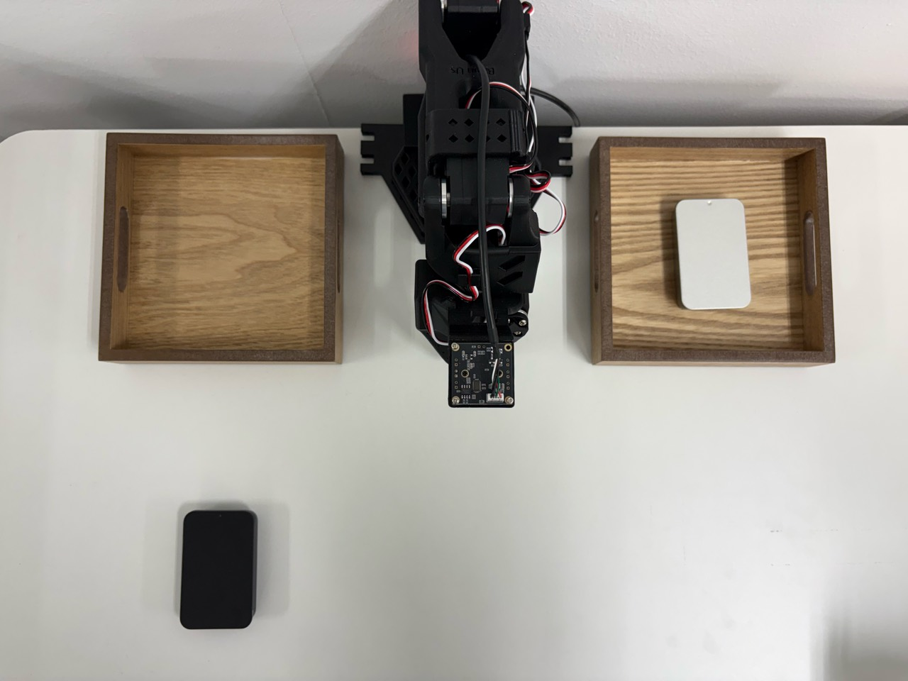

Case preparation and return
Select two closed cases by their contents, then return the USB case to the position seen earlier.
- USB to left tray
- SD to right tray
- Return USB case
A robot sees what’s inside two cases and where they started. After the cases are closed and moved, the same record guides the choice of case and where to return it.



The same experience can become useful for several robot requests, even when those requests are unknown during observation. ReuseMem records visual features before the goal is given, learns to retrieve past evidence that helps predict expert actions, and combines that evidence with the current scene. Across four simulation tasks and two physical scenarios, we evaluate whether a single recording supports multiple goals in independent trials and in sequences that carry forward changes from earlier actions. In simulation, ReuseMem improves joint completion of later goals by 24.5 percentage points over uniform memory with matched action adaptation.
A single memory bank serves each new request. The policy combines the retrieved evidence with the current scene to decide what to do next.

Two SO101 scenarios show different ways to reuse a record through three consecutive requests.
Select two closed cases by their contents, then return the USB case to the position seen earlier.

Use the toy’s original position to select it, brush the spot it has vacated, and put it back.
The current view no longer shows what is inside either case.

In each scenario, all three independent requests succeeded on 14 of 20 recordings. All three requests succeeded without a reset in 13 of 20 sequences.
One shared observation, two separate goal runs, and one continuous sequence per task. Scripted RoboMME demonstrations.
+24.5 ppAll-goal success over Uniform-Memory
| Method | All-goal | Sequence |
|---|---|---|
| Uniform-Memory | 36.0% | 35.0% |
| ReuseMem | 60.5% | 58.0% |
All-goal requires success on both requests in separate runs with the same starting scene and memory. Sequence tests both requests in one run without a reset.

Each recording is fixed before the later requests are revealed. In the independent trials, every request starts from the same post-recording scene and memory. In the sequential trials, each request starts from the state left by the preceding action.
Simulation uses 50 common recordings per task and two requests per recording. Each real-world scenario uses 20 recordings and three requests. The policy receives camera observations, robot state, timestamps, and the revealed request. Evaluator labels for identities, origins, and cues are held out.
| Task | Goal 1 | Goal 2 | All-goal | Sequence |
|---|---|---|---|---|
| VideoPlaceButton | 44 | 45 | 40 | 38 |
| VideoPlaceOrder | 42 | 40 | 34 | 34 |
| VideoUnmaskSwap | 25 | 23 | 15 | 13 |
| PickHighlight | 40 | 39 | 32 | 31 |
At 2,048 entries, feature sharing reduces retained-bank storage from 66.38 to 43.98 MiB. A new request takes 175 ms on an RTX 5090, measured from request receipt to first command dispatch. Measurement details ↗
In simulation, we held the scene, request, and correct outcome fixed and changed the history available to the policy. Success fell from 74.5% to 27.5% when relevant observations were removed, compared with 74.0% when unrelated observations were removed.
@misc{kang2026reusemem,
title = {ReuseMem: One Memory, Multiple Goals in Robot Manipulation},
author = {Yoonseok Kang and Dayeon Jung and Seunghoon Jeon and
Wonjib Kim and Dongchul Park},
year = {2026},
eprint = {2611.21115},
archivePrefix = {arXiv},
primaryClass = {cs.RO},
url = {https://arxiv.org/abs/2611.21115}
}